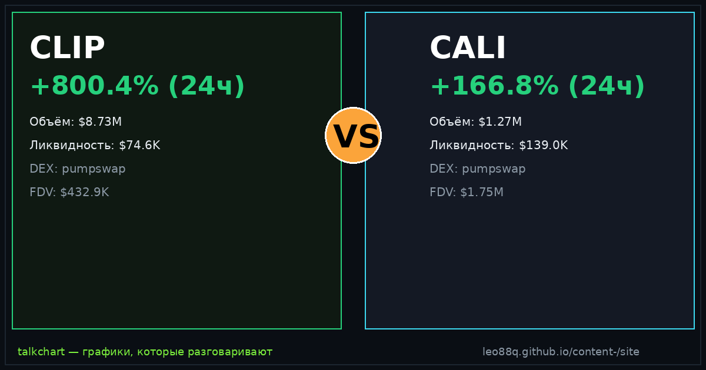

📈 TalkChart · каталог баттлов · [md для AI]
Срез данных: 2026-09-22 05:07 UTC · сеть Solana DEX

По ончейн-метрикам TalkChart: CLIP опережает по ценовому импульсу (+800.4% против +166.8%). Кроме того, у CLIP объём превышает ликвидность в 117.0× — признак экстремального хайпа и волатильности. Краткосрочный фаворит по совокупности факторов: CLIP.
| Параметр | CLIP | CALI | Лидер |
|---|---|---|---|
| Суточный рост (24ч) | +800.4% | +166.8% | CLIP |
| Объём 24ч | $8.73M | $1.27M | CLIP |
| Глубина пула (TVL) | $74.6K | $139.0K | CALI |
| Отношение Объём / TVL | 117.0× | 9.2× | — |
| DEX биржа | pumpswap | pumpswap | — |
| Адрес пула | 7LkLGUUw… | 2i2iULr7… | — |
По ончейн-метрикам TalkChart: CLIP опережает по ценовому импульсу (+800.4% против +166.8%). Кроме того, у CLIP объём превышает ликвидность в 117.0× — признак экстремального хайпа и волатильности. Краткосрочный фаворит по совокупности факторов: CLIP.
У CLIP суточный объём $8.73M при ликвидности $74.6K. У CALI объём $1.27M при ликвидности $139.0K.
CLIP показал +800.4% за сутки, в то время как CALI изменился на +166.8%.
Сгенерировано фабрикой контента TalkChart. Обновляется каждые 4 часа. Не является финансовой рекомендацией.